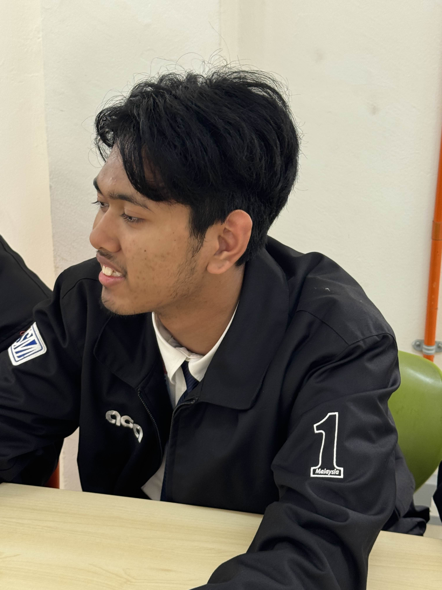
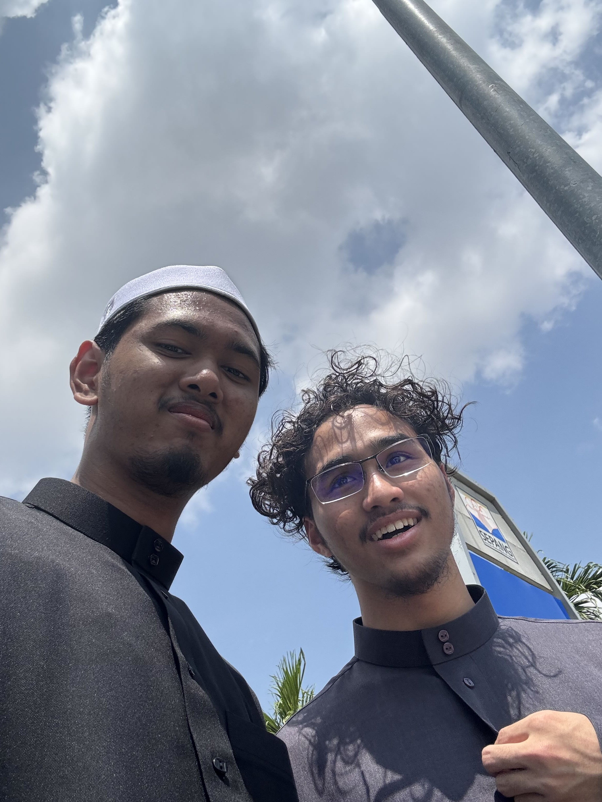
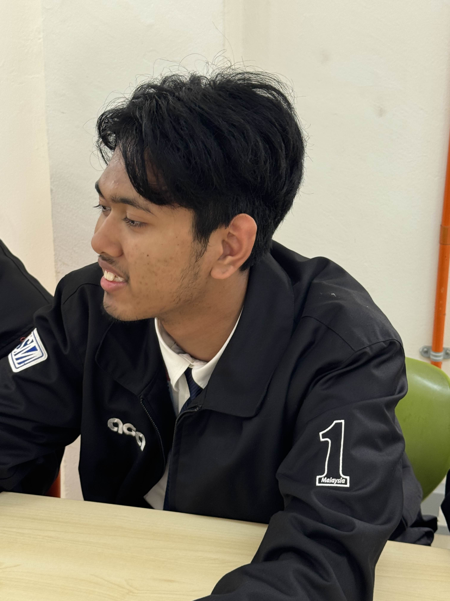
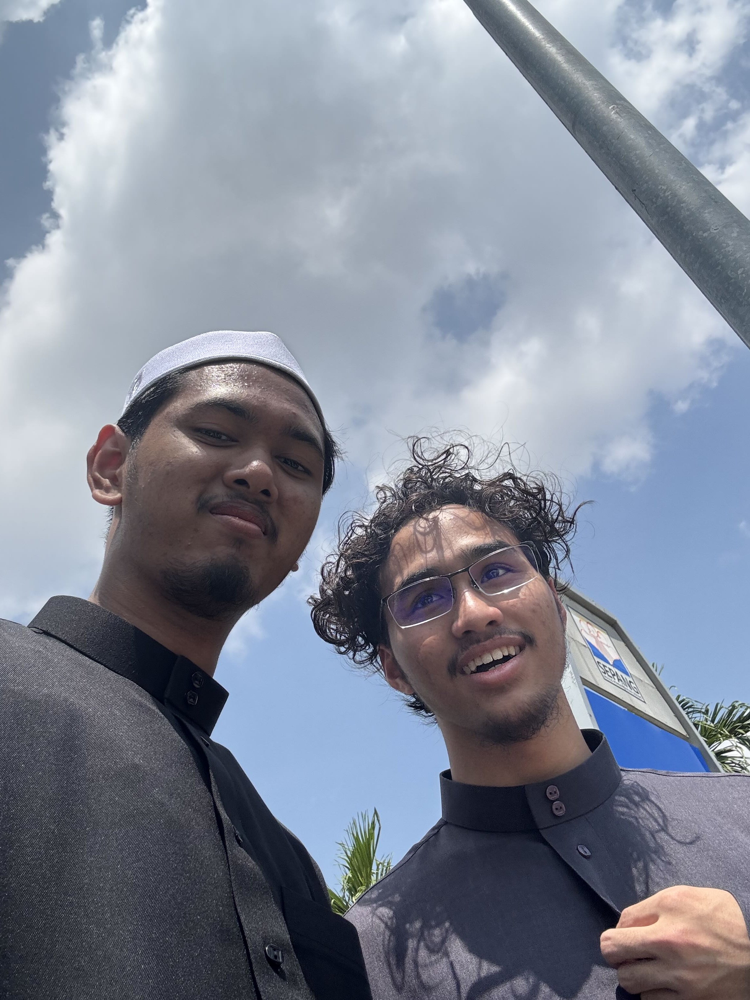
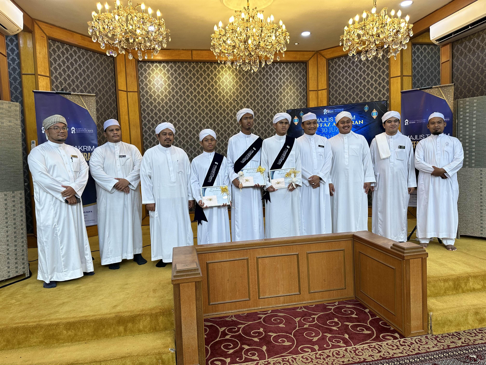
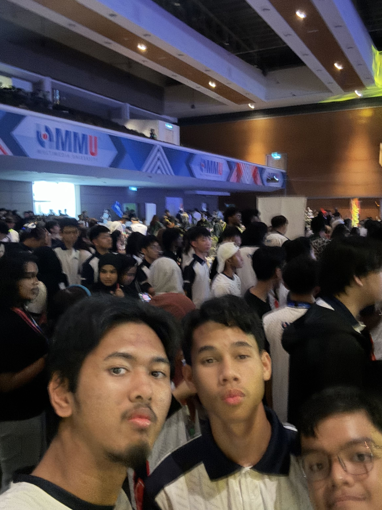

August 9th 2024 — Submitted the last page (Page 581 Juzu' 29) to Ustaz Muhammad Hydhir Bin Abdul Rahim around 8:00 a.m. until 8:10 a.m. A moment that I will forever cherish to myself. Ceremony then were held alongside 2 of my friends.
Hello, I’m Salahudin
Hello there! My name is Salahudin Yusuf, and I’m 18 years old. I’m currently pursuing Foundation in Computing at Multimedia University, stepping into my very first semester. I’ve always wanted to try coding and programming, which is why I chose this course!
My journey started back when I was 7, studying at Sekolah Kebangsaan Bukit Kemuning 2 (SKBK2) while also attending Sri Islam Al-Taqhafah for religious studies. Honestly, I spent most of those early years just playing around, and my UPSR and PSRA results didn’t turn out great.
Things began to change during my teenage years. At 13, I enrolled in Sekolah Tinggi Islam As Sofa Senawang (STIASTQ), a Tahfiz & Qiraat school. That was when I finally started to realize the value of learning. One teacher’s advice stuck with me: “With knowledge, you will learn manners, and with manners, doors to more knowledge will open.” From there, even subjects like Mathematics became my favorite.
During my time in Senawang, I worked hard on memorizing the Qur’an. In Form 1, I completed Juz 30 and Juz 1. By Form 2, I reached Juz 7, and in Form 3, I managed up to Juz 13. In Form 4, I continued until Juz 16. But in August 2024, our school shut down after the building was sold to Perodua. We relocated to the Rembau branch (STIAS), where I carried on from Juz 16 to Juz 19. In my final year, at August 9th 2025, around 8:00–8:10 p.m., I memorized and submitted my very last page — Surah Al-Mursalat — to my principal, Ustaz Muhammad Hydhir Bin Abdul Rahim.
With the Qur’an completed, I could finally focus on my SPM, and by the grace of Allah, I managed to achieve 8As.
And now, here I am at MMU, ready to begin the next chapter of my journey — this time in computing and programming, combining discipline, knowledge, and passion to build my future.
 



Goals & Achievements
Goals (Now & Future)
- Master HTML & CSS fundamentals
- Build python project
- Learn basic JavaScript
- Keep a consistent study routine
- Find a way to fix my sleep schedule
- Get good grades so my parent would be proud of me
Goals Progress Table
| Goal | Status |
|---|---|
| Master HTML & CSS fundamentals | In Progress |
| Build Python project | Planned |
| Learn basic JavaScript | Not Started |
| Keep a consistent study routine | In Progress |
| Fix my sleep schedule | Not Started |



Learning Plan
-
Frontend
- Learn basic HTML tags (headings, paragraphs, links, images)
- Practice CSS colors, fonts, and backgrounds
- Try layouts with Flexbox & Grid (just the basics)
- Make a simple webpage (bio page, portfolio, or hobby page)
-
Backend
- Learn Python syntax (print, variables, loops)
- Try writing small scripts (calculator, to-do list)
- Create a simple program
-
Extras
- Soft Skills → Time management, teamwork, presentation
- Databases → SQL basics, queries, relationships
- Tools → VSCode, GitHub, Postman
Milestones & Achievements ↕
April 24th 2025 — SPM Results were announced ٱلْحَمْدُ لِلَّٰهِ I got 4A+ 2A 2A- . My subjects were Malay (A-), English (A), Arabic (A+), Mathematics (A), Science (A+), History (A+), Islamic Syari'ah Studies (A-), and Al-Quran & As-Sunnah Studies (A+)
June 26th 2025 — Joined MMU during WIN Week, met plenty new friends during the orientation. I have never felt this excited. As a person who hates Orientation week (sorry i am anti-social), this one i let it pass.
Skill Progression
-
CSS 37%
Even though this is my first time of messing around with CSS,
I still have a lot to learn. -
HTML 60%
i don't know why but HTML still confuses me.
What I meant is that when trying out new things for the first time, the complexity of my code never failed to make someone perplexed... -
Python 20%
Python is actually the first programming language that I have learned.
Even though people likes to say things such as "but C++ is faster", i think it doesn't even really matter for me honestly, as long as you enjoy it. -
JavaScript 2%
Safe to say that the 2% is because of me always watching my father doing
his code; I have not started yet.
Videos I Watch to Learn (Thank you BroCode for your amazing videos!)
Reflection
- Progress via small repeats — build first, then refine. Writing short notes after each task turns into a lightweight “growth map” that shows patterns and next steps.
- Mistakes are learning data — feeling behind is a humility check. Use it as fuel to iterate, not a reason to stall.
- Find learning mode — listen • visualize • hands-on. Experiment until it clicks; then make it a daily habit (not just exam prep).
- Stay humble to go deep — ego blocks understanding. Curiosity and honesty about what you don’t know unlock sustained growth.
Reflection Log
| Task | What i did | What needs to improve |
|---|---|---|
| Build & Publish my first website | Structured and styled pages | Learn more way to design, polish to make it cleaner, follow professional designer. |
| Find way to manage time efficiently | Try to complete assignment as soon as possible | Adjust myself to campus life, make use of time to the fullest, avoid engaging in any unnecessary activity. |
| Participation | Projects & Communication | Improve communication & teamwork, help other team member in need. |
Sincerely,
Salah.